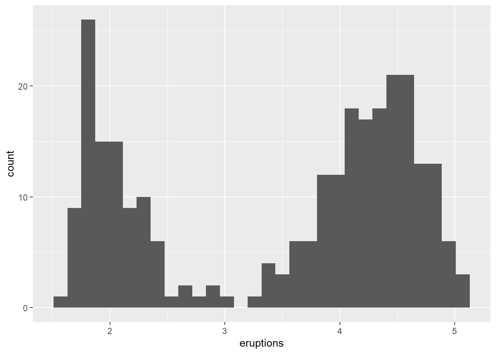
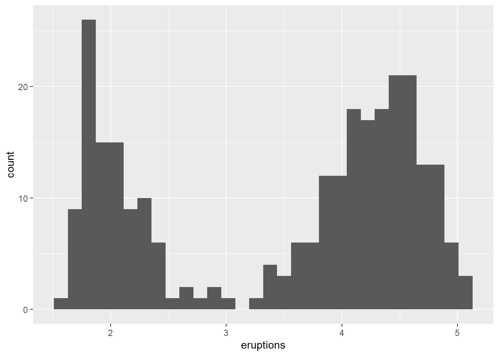

library(ggplot2)
ggplot(faithful, aes(x = eruptions)) + geom_histogram(bins = 30)
library(ggplot2)
ggplot(faithful, aes(x = eruptions)) + geom_histogram(bins = 30)
#| standalone: true
#| viewerHeight: 600
library(shiny)
library(bslib)
# Define UI for application that draws a histogram
ui <- fluidPage(
# Application title
titlePanel("Old Faithful Geyser Data"),
# Sidebar with a slider input for number of bins
sidebarLayout(
sidebarPanel(
sliderInput("bins",
"Number of bins:",
min = 1,
max = 50,
value = 30)
),
# Show a plot of the generated distribution
mainPanel(
plotOutput("distPlot")
)
)
)
# Define server logic required to draw a histogram
server <- function(input, output) {
output$distPlot <- renderPlot({
# generate bins based on input$bins from ui.R
x <- faithful[, 2]
bins <- seq(min(x), max(x), length.out = input$bins + 1)
# draw the histogram with the specified number of bins
hist(x, breaks = bins, col = 'darkgray', border = 'white',
xlab = 'Waiting time to next eruption (in mins)',
main = 'Histogram of waiting times')
})
}
# Run the application
shinyApp(ui = ui, server = server)
#| standalone: true
#| viewerHeight: 800
library(shiny)
library(bslib)
# Define UI for dataset viewer app ----
ui <- fluidPage(
# App title ----
titlePanel("Shiny Text"),
# Sidebar layout with a input and output definitions ----
sidebarLayout(
# Sidebar panel for inputs ----
sidebarPanel(
# Input: Selector for choosing dataset ----
selectInput(inputId = "dataset",
label = "Choose a dataset:",
choices = c("rock", "pressure", "cars")),
# Input: Numeric entry for number of obs to view ----
numericInput(inputId = "obs",
label = "Number of observations to view:",
value = 10)
),
# Main panel for displaying outputs ----
mainPanel(
# Output: Verbatim text for data summary ----
verbatimTextOutput("summary"),
# Output: HTML table with requested number of observations ----
tableOutput("view")
)
)
)
# Define server logic to summarize and view selected dataset ----
server <- function(input, output) {
# Return the requested dataset ----
datasetInput <- reactive({
switch(input$dataset,
"rock" = rock,
"pressure" = pressure,
"cars" = cars)
})
# Generate a summary of the dataset ----
output$summary <- renderPrint({
dataset <- datasetInput()
summary(dataset)
})
# Show the first "n" observations ----
output$view <- renderTable({
head(datasetInput(), n = input$obs)
})
}
# Create Shiny app ----
shinyApp(ui = ui, server = server)